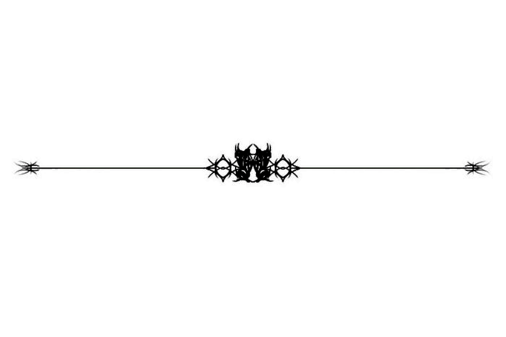
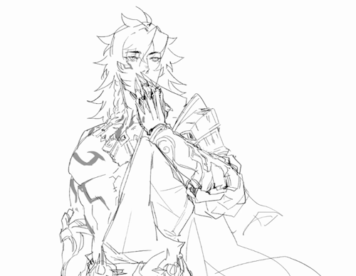

𝖂𝖊𝖑𝖈𝖔𝖒𝖊 𝖙𝖔 𝖙𝖍𝖊 «𝔑𝔬𝔱𝔉𝔩𝔬𝔬𝔡ℌ𝔖ℜ» 𝖋𝖑𝖔𝖔𝖉!
Советую ознакомиться с навигацией. Там находятся все пункты, которые могут заинтересовать вас Просто выбирайте роль, пишите в бот её, юз, добавьте подтверждение возраста и вступайте к нам. У нас довольно большой коллектив, так что и интересных личностей, тем для дискуссий много. Дайте волю воображению, отпустите напряжение, отправьтесь с нами в свободное пространство для обсуждений. Также в нашем флуде присутствует система инициалов (спасибо бывшему Бутхиллу). Желающие могут поставить их в свой ник/куда пожелают) #𝑵𝑭𝑯. #𝑵𝑭
Заповеди:
1. Оскорбления, контент 18+. Оскорбления разрешены только в шуточной форме. За реальные оскорбления виновники будут наказаны. Контент 18+ под блюр и с TW. Расчлененку, убийства и подобное не кидать. Это всем ясно, да?
2. Возрастное ограничение, спам, ресты. Возрастное ограничение 14+, при входе киньте полную дату рождения, остальное можно замазать. Нету доступа к паспорту — приму любое другое весомое подтверждение. Спам — больше пяти однотипных сообщений. Текстовые сообщения лесенкой допускаются тогда, когда несут смысловую нагрузку. Команды можно часто юзать, но не переусердствуйте. Ресты. Хотите взять рест? Рест можно взять тем, кто во флуде больше недели. Далее о том, как работает система для тех, кто выходит из реста. 100/7≈14 соо в день. Закончился рест в:
Пн? Вы должны набрать 100 соо. Вт? 86 соо. Ср? 72 соо. Чт? 58 соо. Пт? 44 соо. Сб? 30 соо. Вс? 16 соо. Почему такая система? Ибо уже были вопросы по тому, как правильно должны набирать норму рестники, ежели 100 соо — недельная норма. Поэтому мы разделили её на дни, чтобы всё было справедливо. Даже посчитали для вас)))3. Ссоры/конфликты/дискуссии, переходящие в них.
Разговоры к подобному не сводить, иначе последуют наказания. Админы будут вычитывать ваши разговоры только в том случае, когда это будет действительно необходимо (важные вопросы касательно судьбы участников/флуда и т.п.). В остальных случаях админы судьями не нанимались. Извинитесь и разойдетесь мирно — избежите наказаний.4. А) Калл ⊱ Б) Пиар ⊱ В) Смена роли ⊱ Г) Выход ⊱ Д) Общение во флуде.
А) Каллы только для админов и с позволения админов для участников. Б) Пиар Вашего тгк/изделий/работ и т.п. разрешен. При пиаре других флудов, ролок и т.п. без согласия админов последует варн. В) Смена роли разрешена до пяти раз, при желании сменить роль пишите одному из админов) Г) Настоятельно просим писать роль и отмечать участника администрации. Мы, конечно, не сможем заставить вас сделать это, но почему мы априори должны заставлять? Это простая человечность. Мы вам, а вы нам) Д) Разрешено обсуждать ЛЮБЫЕ темы, но с умом. Если напряжение будет нарастать — админы имеют право закрыть эту тему. За неуважение, оскорбления, переход на личности и т.п. последует наказание. Нарушение правил = словесный пред/варн/мут/бан. Выбор меры наказания происходит на основе тяжести «преступления». На этом всё, наконец-то… Ждём тебя в нашем коллективе, чертёнок. Он у нас большой и до ужаса интересный)Развлечения грешников.
Покерный блеф:
Правила: стартовое количество фишек каждого игрока — 30 (для начала). Каждый игрок по очереди пишет о себе три факта, два из которых ложь. Другие игроки ставят ставки на то, какой факт является правдой. После игрок, написавший факты, озвучивает какой из них является правдой. За ставку на неправду снимаются 3 фишки, за ставку на правду фишки не снимаются с вашего счета. Очки тех кто не угадал переходят к тому кто писал вопрос. Тем, кто сбегает из игры и пропускает свою очередь, снимают по 3 фишки. Давать свой ответ можно лишь ЕДИНОЖДЫ, переписывание и замена не считаются. И так до 3-4 раундов, пока не останется один человек с найбольшим количеством фишек)) Те, у кого фишек 0, вылетают, дальше могут лишь наблюдать за игрой. Ведущим игры является один из администраторов.
Шпион:
В каждом раунде участники получают карточки, на которых написана локация, либо что-то другое. Один из игроков при этом оказывается шпионом. Он не знает локацию. Его цель угадать локацию, не раскрыв свой статус шпиона. Участники задают друг другу вопросы, касающиеся локации, чтобы раскрыть шпиона. А шпион в свою очередь, должен по этим вопросам догадаться, в какой же локации находятся все участники. Если шпион по вопросам догадался, где находятся участники, то он просто озвучивает место. Если он оказался прав, то он побеждает. Если во время игры участники заподозрили одного в шпионаже, они могут проголосовать против него, чтобы проверить действительно ли он шпион. Если они проголосовали и человек действительно оказался шпионом, то они побеждают. Если же они выбрали не того, то раунд заканчивается и побеждает шпион.
Невеста:
Игроки делятся на: 1. ведущий-рассказчик
2. невеста (только одна) 3. женихи (неограниченное кол-во, все остальные игроки) Ведущий делит всех игроков на роли, и игра начинается. Невеста пишет !в лс! ведущему, какой бы она хотела задать вопрос женихам. Этот вопрос ведущий пишет во флуд, принцы немного думают над ответом и пишут их опять !в лс! ведущему. Каждый ход невеста избавляется от жениха, чей ответ ей больше всего не понравился, и так игра будет продолжаться, пока не останется один жених.«Две правды и одна ложь»:
Один игрок рассказывает три факта о себе (две правды, одну ложь), а остальные должны угадать, какое утверждение — ложное, чтобы лучше узнать друг друга в непринужденной обстановке. Это отличный способ начать знакомство, ведь ложь должна быть правдоподобной, чтобы ее было сложно отличить от реальных фактов. Как играть:
Подготовьтесь: Каждый участник придумывает три утверждения о себе: два правдивых и одно ложное. Представляйтесь: По очереди игроки зачитывают свои три утверждения (не обязательно в порядке правда-правда-ложь). Угадывайте: Остальные участники обсуждают и пытаются определить, какая из историй — вымысел. Раскрывайте карты: Игрок, который рассказывал истории, раскрывает, где была ложь, а где правда.Архив безумия.
Наши самые сладостные деяния)))

Ресты:
- Сандэй — до 04.01.26
- Рысь — до 01.01.2026
- Анакса — до 15.01.2026
- Аргенти — до 05.01.2026
- Мат 7 — до 13.01.2026
Звучание душ грешников
Выберите песню...
Наши грешники
Георгина
Я самая пиздатая
Март 7
50 метров от вас. Приходите, я скучаю 🌹
Дань хэн
главный фанат блэйда и номер один флуда
Мидей
Ваша любимая ведьма)
Искорка
На работе
Конференция грешников
История...
Всё началось с того, что у нас был флуд по бсд. Только я (Авантюрин), Дань Хэн, Блэйд и прочие участники администрации того флуда, которого уже нету. Мы старались над ним, но фд уже загибался, а с ним и общение. Отдачи не было. Тянули до последнего, остальные админы и владельцы сбежали. В общем, мы не выдержали и закрыли его. Тогда я в рандомный летний день накидала инфо нового будущего флуда по хср, кинула в админ чат, Блэйд с Даней оценили - и мы быстро принялись за работу. После подтянули и других крутых ребят в админ состав. Что сказать... Наш проект стал большим доволько быстро, остаётся таковым и сейчас. Регулярный движ, интерактивы, приличный оборот участников делают своё дело. Правила вообще не строгие, обсуждать можно любые темы, а админы выделяются нестандартным подходом и нелюбовью к банальности и шаблонности флудов. Наверное поэтому у нас есть сайт, а не просто телеграм чат, можно делить одну роль на двоих, играть в покер, обсуждать даже самые трешовые, странные темы и не бояться осуждения, периодами нарушать правила... Ведь все мы здесь свои, все мы - грешники. Видела я другие флуды, в которых можно "обсуждать любые темы", "не вести себя так, словно ты толерашка" и т.п., но на деле в них ВСЕГДА царил хаос и неприятная, токсичная атмосфера. У нас же беспорядок переходит в упорядоченную небанальность, без токсичности, ахаха. У нас был второй чат, кстати. Но наших админов тогда не хватило на работу с ним. Так что весело живем одним чатом, в котором стабильно около 50 участиков, часто даже больше. Актив тоже очень высокий. Мы рады развлекать вас, а вы весело проводите время с нами))
